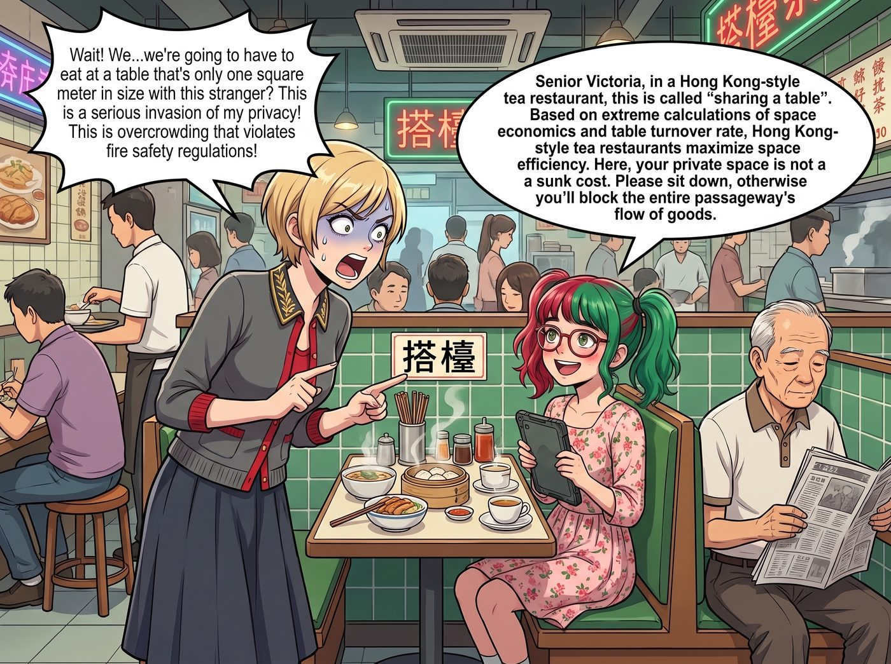

搭檯

逃過了點心酒樓的筷子危機與內臟恐懼後，當下午茶與晚餐的交界時刻，小分隊被 Lily 帶進了一家霓虹燈閃爍、招牌上寫著「冰室」或「茶餐廳」的港式餐館。
按理說，茶餐廳提供刀叉，餐點也多是肉排、麵包和麵條，應該非常符合美國人的飲食習慣。但她們萬萬沒想到，茶餐廳的「吃癟點」根本不在於食材本身，而在於這裡那種足以讓人精神衰弱的「極限戰鬥節奏」與「硬核生存法則」。
一、社交距離的粉碎
走進茶餐廳，這裡沒有寬敞的包廂，只有狹窄的卡座。正值用餐高峰期，店裡人滿為患。
「幾位啊？五個？過來這邊坐！」一個脖子上搭著毛巾的夥計用極快的語速吼道，然後指著一個只能勉強擠下四個人的卡座。而卡座的最裡面，居然已經坐著一個正在看賽馬報紙、吃著燒臘飯的陌生阿伯。
「等等，」Victoria 停住了腳步，名媛的瞳孔開始地震，「我們……要跟這個陌生人擠在一張只有一平方公尺的桌子上吃飯？」
「Victoria 學姐，在茶餐廳，這叫做『搭檯』。」Lily 毫不猶豫地擠進了座位，並且乖巧地向看報紙的阿伯點了點頭，「根據空間經濟學與翻檯率的極致演算法，茶餐廳將坪效發揮到了極限。請坐下，否則您會阻塞整條通道的物流動線。」
Victoria 咬著牙，緊緊抱著自己的愛馬仕包包，縮在座位的最邊緣，生怕自己的真絲裙邊碰到阿伯那盤滴著油脂的燒鴨飯。
二、點餐的加密通話
剛坐下不到十秒鐘，那個夥計就拿著筆，面無表情地站在了桌邊，用筆尾「噠噠噠」地敲著桌子。
Chloe 試圖展現出阿卡迪亞灣霸主的氣勢：「咳，給我來一份……呃……這個帶花生醬的牛肉麵……還有……」
「快啲啦靚女，後面好多人等緊啊。」夥計不耐煩地翻了個白眼。
Chloe 瞬間被這種極致的服務業冷暴力給噎住了，氣勢瞬間清零：「那……那再來杯紅茶，加冰塊……」
「沙嗲牛肉麵，一杯凍檸茶，要爆冰。」Lily 突然開口，語速竟然跟夥計一樣快，接著流暢地報出了一連串宛如摩斯密碼般的點餐術語，「再加一個靚仔、兩份飛邊走青嘅西多士、一杯茶走、一杯和尚跳海。」
夥計愣了一下，看著這個推著圓框眼鏡的小姑娘，眼中居然閃過一絲「遇見行家」的敬意，唰唰唰記下後轉身像一陣風一樣衝向廚房。
「Lily……妳剛才念的那段咒語是什麼？」Max 驚恐地問。
「這是茶餐廳獨有的物流加密代碼，」Lily 大眼睛裡閃爍著對高效率系統的狂熱，「這簡直是餐飲界的科學管理奇蹟！」
三、熱量炸彈
不到五分鐘，食物就像流水線上的零件一樣被「啪啪啪」地砸在了桌上。
Chloe 看著面前那碗沙嗲牛肉麵和一個夾著厚厚一塊冰鎮黃油的冰火菠蘿油，眼睛都直了：「這才是人吃的東西！去他的白人飯！我願意為了這個漢堡被困在西雅圖一輩子！」
Victoria 則看著面前的法蘭西多士，陷入了深深的迷茫。端上來的是一塊被油炸得金黃酥脆的厚切麵包磚塊，中間夾著濃郁的花生醬，旁邊還配了一大罐金黃色的糖漿。
「這不是吐司，這是一塊吸滿了致死量油脂的海綿炸彈！」Victoria 崩潰地看著那塊閃閃發光的熱量怪獸，但出於極度的飢餓，她用刀叉切下了一小角放進嘴裡。
一秒鐘後，名媛的動作停滯了。她默默地拿起那罐糖漿，面無表情地在西多士上擠了滿滿一大圈，然後像一個放棄抵抗的墮落者一樣，大口吃了起來。
Max 端著相機，試圖捕捉茶餐廳那種獨特的迷幻光影。但夥計端著盤子從她身邊像閃電般掠過，大喊一聲：「借過啦！唔該收埋部相機，阻住地球轉啊！」Max 嚇得立刻把相機塞回包裡，覺得自己在這套極端高效的系統裡，就是一個多餘的系統 Bug。
四、天使的絕對領域
在這片充滿油煙味、吵鬧聲和冷漠服務的混亂中心，只有 Kate 依然維持著絕對的聖潔。
她點了一份最溫和的火腿通心粉和一杯熱好立克。當那個看起來脾氣暴躁的夥計把通心粉端給她，並且因為動作太快差點把湯汁灑出來時，Kate 抬起頭，露出了一個足以淨化整個中國城的純潔微笑。
「沒關係的，先生。您今天真的很辛苦，請小心別燙到自己哦。」Kate 溫柔地說。
那個平時每天要罵幾十個客人的阿叔，瞬間僵在了原地。他的老臉居然破天荒地紅了一下，結結巴巴地回了一句：「呃……好、好啦，慢慢食啊，小妹妹……唔夠湯再叫我加。」然後，這位傳奇的冷麵夥計，居然在接下來的半小時裡，主動跑過來幫她們加了三次茶水。
「這不科學。」Chloe 咬著沙嗲牛肉，看著夥計遠去的背影，「Kate 居然能把這種餐飲界的地獄犬馴化成金毛尋回犬？」
而坐在旁邊的 Lily，已經吃完了她的白飯，正在筆記本上飛快地畫著流程圖：「如果我們把這套搭檯率和極限壓縮客留時間的邏輯引進到我們的二號車廂起居室，我們至少能把洗澡、吃飯和家務的行政效率提升 400%。從明天開始，我建議我們在家裡也實施點菜代碼制……」
「妳敢？！」
Chloe、Victoria 和 Max 幾乎是異口同聲地咆哮出來。
在這頓充滿了油脂、糖分與文化衝擊的茶餐廳晚餐中，沒有人真的吃癟，因為高熱量的食物治癒了一切。但看著實習生那雙充滿了效率改造狂熱的大眼睛，所有人都在心裡默默祈禱：回到奧林匹亞半島後，千萬別讓二號車廂變成另一家需要搭檯的西雅圖冰室。